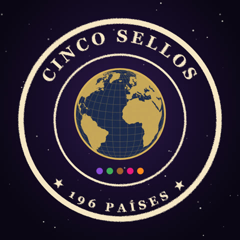
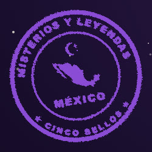
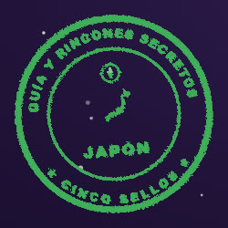
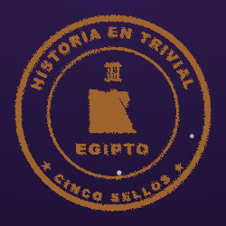
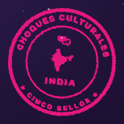
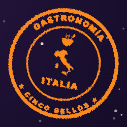

CINCO SELLOS
5 VÍDEOS POR PAÍS · 196 PAÍSES
QUÉ ES
Recorremos los 196 países del mundo, uno a uno. De cada país hacemos 5 vídeos, como 5 sellos en un pasaporte: cuando ves los cinco, ese país queda completado.
Son vídeos animados, contados con calma y pensados para quien sueña con viajar… o para viajar sin moverse del sofá.
LAS 5 SERIES

Misterios y LeyendasLas historias que se cuentan a media luz
Guía y Rincones SecretosTodo para preparar el viaje
Historia en TrivialEl concurso «El Gran Sello»
Choques CulturalesCostumbres y trato con la gente
GastronomíaQué comer, dónde y cuándoNUESTRO PASAPORTE
MéxicoCompletado · 5 de 5 sellos
AustriaEn curso · especial mercados navideños
Quedan 194 países. ¿Cuál quieres que sea el siguiente? Cuéntanoslo en los comentarios.